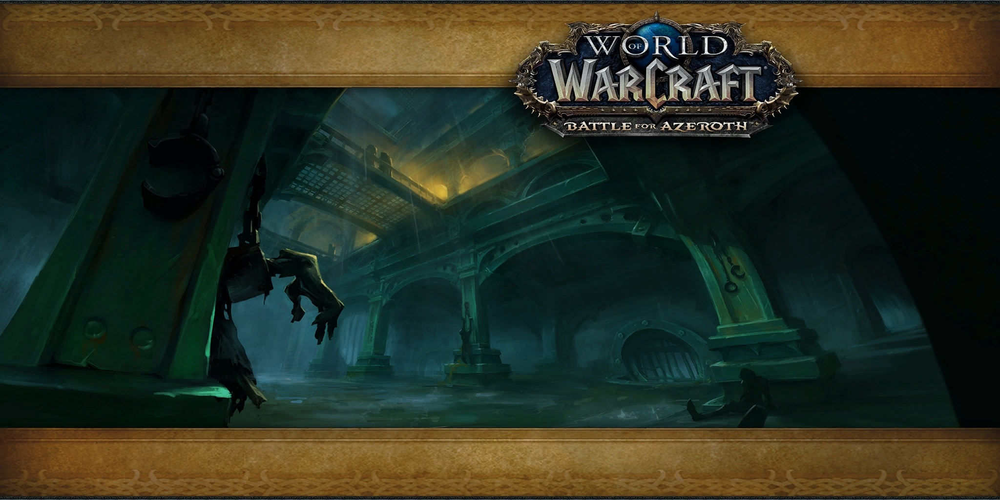

Freehold is a max-level dungeon located in Tiragarde Sound. It is available to Level 110 Alliance players on Normal difficulty and level 120 players on Heroic, Mythic, and Mythic+ difficulties. This guide will outline strategies and important role-based responsibilities for each of the 4 bosses in Freehold, as well as some tips on particularly threatening trash mobs. When running this dungeon in Mythic+, additional affixes will be present on the enemies in the dungeon, affecting the way they behave.

King's Rest is a max-level dungeon located in Zuldazar. It is available to Level 120 players on Heroic, Mythic and Mythic+ difficulties only. This guide will outline strategies and important role-based responsibilities for each of the 4 bosses in King's Rest, as well as some tips on particularly threatening trash mobs. When running this dungeon in Mythic+, additional affixes will be present on the enemies in the dungeon, affecting the way they behave.

Operation: Mechagon is a max-level dungeon located on Mechagon. It is available to Level 120 players on Mythic difficulty only and is considered to be a megadungeon, similar to Legion's Return to Karazhan. Operation: Mechagon contains 8 bosses and has a weekly lockout. This guide will outline strategies and important role-based responsibilities for each of the 8 bosses in Operation: Mechagon, how to activate the known Hard Mode encoutners, as well as some tips on particularly threatening trash mobs. In Patch 8.3, Heroic and Mythic+ difficulties will be added to Operation: Mechagon. For these difficulties, it will be split into two different instances. The official names are: Operation: Mechagon - Junkyard - Gunker, Trixie & Naeno, King Gobbamak, HK-8 Operation: Mechagon - Workshop - Tussle Tonks, K.U.J.O., Head Machinist Sparkflame, King Mechagon Heroic Mechagon is available in the Dungeon Finder, so if you haven't managed to experience this dungeon yet, you'll be able to queue for it in 8.3!

The MOTHERLODE!! is a max-level dungeon located in Kezan. The dungeon entrance is located in Zuldazar. It is available to Level 115 Horde players on Normal difficulty and level 120 players on Heroic, Mythic, and Mythic+ difficulties. This guide will outline strategies and important role-based responsibilities for each of the 4 bosses in The MOTHERLODE!!, as well as some tips on particularly threatening trash mobs. When running this dungeon in Mythic+, additional affixes will be present on the enemies in the dungeon, affecting the way they behave.

Siege of Boralus is a max-level dungeon located in Tiragarde Sound. It is available to Level 120 Alliance players on Heroic, Mythic and Mythic+ difficulties only. This guide will outline strategies and important role-based responsibilities for each of the 5 bosses in Siege of Boralus, as well as some tips on particularly threatening trash mobs. When running this dungeon in Mythic+, additional affixes will be present on the enemies in the dungeon, affecting the way they behave. This is the only dungeon in Battle for Azeroth in which the Alliance and Horde have different versions. The differences are mainly cosmetic, with trash & the first boss having different names, however the route towards the first boss is also slightly different. This route has the same trash enemies for both Alliance and Horde, and as the route is pretty linear we will not be covering this minor route change in this guide. Any large differences between the versions have been noted throughout the guide.

Shrine of the Storm is a max-level dungeon located in Stormsong Valley. It is available to Level 110 Alliance players on Normal difficulty and level 120 players on Heroic, Mythic, and Mythic+ difficulties. This guide will outline strategies and important role-based responsibilities for each of the 4 bosses in Shrine of the Storm, as well as some tips on particularly threatening trash mobs. When running this dungeon in Mythic+, additional affixes will be present on the enemies in the dungeon, affecting the way they behave.

Tol Dagor is a max-level dungeon located in Tiragarde Sound. It is available to Level 115 Alliance players on Normal difficulty and level 120 players on Heroic, Mythic, and Mythic+ difficulties. This guide will outline strategies and important role-based responsibilities for each of the 4 bosses in Tol Dagor, as well as some tips on particularly threatening trash mobs. When running this dungeon in Mythic+, additional affixes will be present on the enemies in the dungeon, affecting the way they behave.
Temple of Sethraliss is a max-level dungeon located in Vol'dun. It is available to Level 110 Horde players on Normal difficulty and level 120 players on Heroic, Mythic, and Mythic+ difficulties. This guide will outline strategies and important role-based responsibilities for each of the 4 bosses in Temple of Sethraliss, as well as some tips on particularly threatening trash mobs. When running this dungeon in Mythic+, additional affixes will be present on the enemies in the dungeon, affecting the way they behave.

The Underrot is a max-level dungeon located in Nazmir. It is available to Level 110 Horde players on Normal difficulty and level 120 players on Heroic, Mythic, and Mythic+ difficulties. This guide will outline strategies and important role-based responsibilities for each of the 4 bosses in The Underrot, as well as some tips on particularly threatening trash mobs. When running this dungeon in Mythic+, additional affixes will be present on the enemies in the dungeon, affecting the way they behave.

The Underrot is a max-level dungeon located in Nazmir. It is available to Level 110 Horde players on Normal difficulty and level 120 players on Heroic, Mythic, and Mythic+ difficulties. This guide will outline strategies and important role-based responsibilities for each of the 4 bosses in The Underrot, as well as some tips on particularly threatening trash mobs. When running this dungeon in Mythic+, additional affixes will be present on the enemies in the dungeon, affecting the way they behave.